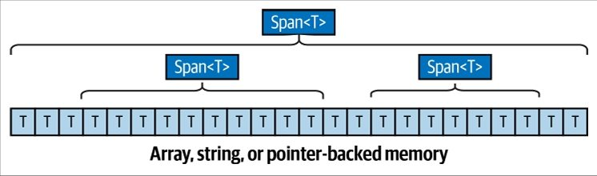

فصل بیست و سوم: Span و Memory
ساختارهای Span<T> و Memory<T> بهعنوان نمایههای سطح پایین روی یک آرایه، رشته یا هر بلوک پیوستهای از حافظه مدیریتشده یا غیرمدیریتشده عمل میکنند. هدف اصلی آنها کمک به برخی انواع میکروبهینهسازیها است—بهویژه نوشتن کد با تخصیص حداقل حافظه که تخصیصهای حافظه مدیریتشده را به حداقل میرساند (و در نتیجه فشار روی garbage collector را کاهش میدهد)، بدون اینکه نیاز باشد کد خود را برای انواع مختلف ورودی تکرار کنید.
آنها همچنین امکان slicing را فراهم میکنند—کار با بخشی از آرایه، رشته یا بلوک حافظه بدون ایجاد یک نسخه کپی.
Span<T> و Memory<T> بهویژه در نقاط داغ عملکرد مفید هستند، مانند ASP.NET Core processing pipeline یا یک JSON parser که به یک پایگاه داده شیءگرا سرویس میدهد.
اگر در یک API با این نوعها مواجه شدید و نیازی به مزایای بالقوه عملکرد آنها ندارید، میتوانید بهسادگی به شکل زیر با آنها کار کنید:
- وقتی متدی انتظار یک
Span<T>,ReadOnlySpan<T>,Memory<T>یاReadOnlyMemory<T>دارد، به جای آن یک آرایه ارسال کنید؛ یعنیT[]. (این به لطف عملگرهای تبدیل ضمنی ممکن است.) - برای تبدیل از یک span/memory به آرایه، متد
ToArrayرا فراخوانی کنید. و اگرTاز نوعcharباشد،ToStringspan/memory را به رشته تبدیل میکند.
از C# 12 به بعد، میتوانید از collection initializers برای ایجاد spanها نیز استفاده کنید.
بهطور مشخص، Span<T> دو کار انجام میدهد:
- یک رابط آرایهمانند مشترک روی آرایههای مدیریتشده، رشتهها و حافظه پشتیبانیشده توسط اشارهگر فراهم میکند. این امکان را میدهد تا از stack-allocated و حافظه غیرمدیریتشده استفاده کنید و از garbage collection اجتناب کنید، بدون اینکه کد خود را تکرار کرده یا با اشارهگرها کار کنید.
- امکان slicing فراهم میکند: بخشهای قابل استفاده مجدد span را بدون ایجاد کپی در اختیار میگذارد.
Span<T> تنها از دو فیلد تشکیل شده است: یک اشارهگر و یک طول. به همین دلیل، فقط میتواند بلوکهای پیوسته حافظه را نمایش دهد. (اگر نیاز به کار با حافظه غیرپیوسته دارید، کلاس ReadOnlySequence<T> بهعنوان یک linked list در دسترس است.)
از آنجایی که Span<T> میتواند حافظه تخصیصیافته روی stack را بپوشاند، محدودیتهایی بر نحوه ذخیره یا انتقال نمونهها وجود دارد (که بخشی از آن به دلیل اینکه Span<T> یک ref struct است اعمال میشود).Memory<T> مانند یک span عمل میکند اما بدون این محدودیتها، با این حال نمیتواند حافظه اختصاصیافته روی stack را بپوشاند. با این حال، Memory<T> همچنان مزیت slicing را فراهم میکند.
هر ساختار دارای یک همتای read-only است (ReadOnlySpan<T> و ReadOnlyMemory<T>). علاوه بر جلوگیری از تغییرات غیرعمدی، همتایان read-only عملکرد را با دادن آزادی بیشتر به compiler و runtime برای بهینهسازی افزایش میدهند.
خود .NET (و ASP.NET Core) از این نوعها برای بهبود کارایی در I/O، شبکه، پردازش رشته و JSON parsing استفاده میکنند.
توانایی Span<T> و Memory<T> در انجام array slicing باعث شده است کلاس قدیمی ArraySegment<T> بلااستفاده شود. برای کمک به هرگونه انتقال، عملگرهای تبدیل ضمنی از ArraySegment<T> به تمام ساختارهای span/memory و از Memory<T> و ReadOnlyMemory<T> به ArraySegment<T> موجود است.
Spans و Slicing
بر خلاف آرایه، یک span میتواند بهسادگی slice شود تا بخشهای مختلف دادههای زیرین را نمایش دهد، همانطور که در شکل 23-1 نشان داده شده است.
برای مثال عملی، فرض کنید میخواهید متدی برای جمعآوری عناصر یک آرایه از اعداد صحیح بنویسید. یک پیادهسازی میکروبهینهشده، از LINQ اجتناب کرده و از حلقه foreach استفاده میکند:
int Sum (int[] numbers)
{
int total = 0;
foreach (int i in numbers) total += i;
return total;
}

حالا تصور کنید که میخواهید فقط بخشی از آرایه را جمع بزنید. در این حالت دو گزینه دارید:
- ابتدا بخش مورد نظر آرایه را در یک آرایه دیگر کپی کنید
- یا پارامترهای اضافی به متد اضافه کنید (مانند offset و count)
گزینه اول ناکارآمد است و گزینه دوم باعث شلوغی و پیچیدگی میشود (این مشکل وقتی بدتر میشود که متدها نیاز داشته باشند بیش از یک آرایه را قبول کنند).
Span این مشکل را بهخوبی حل میکند. تنها کاری که باید انجام دهید این است که نوع پارامتر را از int[] به ReadOnlySpan<int> تغییر دهید (بقیه کد همان میماند):
int Sum (ReadOnlySpan<int> numbers)
{
int total = 0;
foreach (int i in numbers) total += i;
return total;
}
ما از ReadOnlySpan<T> به جای Span<T> استفاده کردیم چون نیازی به تغییر آرایه نداریم. یک تبدیل ضمنی از Span<T> به ReadOnlySpan<T> وجود دارد، بنابراین میتوانید یک Span<T> را به متدی بدهید که انتظار یک ReadOnlySpan<T> دارد.
میتوانیم این متد را به شکل زیر تست کنیم:
var numbers = new int[1000];
for (int i = 0; i < numbers.Length; i++) numbers[i] = i;
int total = Sum(numbers);
میتوانیم Sum را با آرایه صدا بزنیم زیرا تبدیل ضمنی از T[] به Span<T> و ReadOnlySpan<T> وجود دارد. گزینه دیگر استفاده از متد extension AsSpan است:
var span = numbers.AsSpan();
شاخصگذار (indexer) برای ReadOnlySpan<T> از ویژگی ref readonly در C# استفاده میکند تا مستقیماً به دادههای زیرین دسترسی پیدا کند. این امکان باعث میشود متد ما تقریباً به همان خوبی نسخه اصلی که از آرایه استفاده میکرد عمل کند. اما مزیت آن این است که حالا میتوانیم آرایه را slice کنیم و فقط بخشی از عناصر را جمع بزنیم، بهصورت زیر:
// جمع ۵۰۰ عنصر وسط آرایه (شروع از موقعیت ۲۵۰):
int total = Sum(numbers.AsSpan(250, 500));
اگر از قبل یک Span<T> یا ReadOnlySpan<T> دارید، میتوانید آن را با متد Slice برش دهید:
Span<int> span = numbers;
int total = Sum(span.Slice(250, 500));
همچنین میتوانید از indices و ranges در C# 8 استفاده کنید:
Span<int> span = numbers;
Console.WriteLine(span[^1]); // آخرین عنصر
Console.WriteLine(Sum(span[..10])); // ۱۰ عنصر اول
Console.WriteLine(Sum(span[100..])); // از عنصر ۱۰۰ تا انتها
Console.WriteLine(Sum(span[^5..])); // ۵ عنصر آخر
اگرچه Span<T> IEnumerable<T> را پیادهسازی نمیکند (چون یک ref struct است و نمیتواند اینترفیسها را پیادهسازی کند)، اما الگویی را پیاده میکند که اجازه میدهد foreach در C# روی آن کار کند (به صفحه ۲۰۳ مراجعه کنید).
CopyTo و TryCopyTo
متد CopyTo عناصر یک span (یا Memory<T>) را به span دیگری کپی میکند. در مثال زیر، همه عناصر span x را در span y کپی میکنیم:
Span<int> x = [1, 2, 3, 4]; // Collection expression
Span<int> y = new int[4];
x.CopyTo(y);
توجه کنید که x با یک collection expression مقداردهی شده است. Collection expressions (از C# 12) نه تنها یک میانبر مفید هستند، بلکه در مورد spanها اجازه میدهند کامپایلر نوع زیرین را انتخاب کند. وقتی تعداد عناصر کم است، کامپایلر ممکن است حافظه را روی stack تخصیص دهد (به جای ایجاد آرایه) تا از سربار تخصیص روی heap جلوگیری کند.
Slicing این متد را بسیار کاربردیتر میکند. در مثال بعد، نصف اول span x را در نصف دوم span y کپی میکنیم:
Span<int> x = [1, 2, 3, 4];
Span<int> y = [10, 20, 30, 40];
x[..2].CopyTo(y[2..]); // y اکنون [10, 20, 1, 2]
اگر فضای کافی در مقصد وجود نداشته باشد، CopyTo exception پرتاب میکند، در حالی که TryCopyTo false برمیگرداند (بدون کپی کردن عناصر).
ساختارهای span همچنین متدهایی برای Clear و Fill و همچنین متد IndexOf برای جستجوی عنصر در span ارائه میدهند.
جستجو در Spans
کلاس MemoryExtensions متدهای توسعه متعددی برای جستجوی مقادیر در spanها ارائه میدهد، مانند: Contains, IndexOf, LastIndexOf, BinarySearch و همچنین متدهایی که spanها را تغییر میدهند، مانند: Fill, Replace, Reverse.
از .NET 8، متدهایی نیز برای جستجوی هر یک از چند مقدار وجود دارد، مانند: ContainsAny, ContainsAnyExcept, IndexOfAny, IndexOfAnyExcept.
با این متدها میتوانید مقادیر مورد جستجو را به صورت یک span یا به صورت یک نمونه SearchValues<T> (در System.Buffers) مشخص کنید، که با SearchValues.Create ایجاد میشود:
ReadOnlySpan<char> span = "The quick brown fox jumps over the lazy dog.";
var vowels = SearchValues.Create("aeiou");
Console.WriteLine(span.IndexOfAny(vowels)); // 2
SearchValues<T> عملکرد را بهبود میدهد وقتی که نمونه در جستجوهای متعدد دوباره استفاده شود.
میتوانید از این متدها هنگام کار با آرایهها یا رشتهها نیز استفاده کنید، کافی است AsSpan() روی آرایه یا رشته فراخوانی شود.
کار با متن (Working with Text)
Spanها طوری طراحی شدهاند که با رشتهها بهخوبی کار کنند، که بهعنوان ReadOnlySpan<char> در نظر گرفته میشوند. متد زیر تعداد کاراکترهای فاصله (whitespace) را شمارش میکند:
int CountWhitespace(ReadOnlySpan<char> s)
{
int count = 0;
foreach (char c in s)
if (char.IsWhiteSpace(c))
count++;
return count;
}
میتوانید چنین متدی را با یک رشته صدا بزنید (به لطف عملگر تبدیل ضمنی):
int x = CountWhitespace("Word1 Word2"); // درست است
یا با یک substring:
int y = CountWhitespace(someString.AsSpan(20, 10));
متد ToString() یک ReadOnlySpan<char> را به رشته تبدیل میکند.
متدهای توسعه (Extension Methods) تضمین میکنند که برخی از متدهای پرکاربرد کلاس رشته نیز برای ReadOnlySpan<char> در دسترس باشند:
var span = "This ".AsSpan(); // ReadOnlySpan<char>
Console.WriteLine(span.StartsWith("This")); // True
Console.WriteLine(span.Trim().Length); // 4
توجه کنید که متدهایی مانند
StartsWithاز ordinal comparison استفاده میکنند، در حالی که متدهای معادل در کلاس رشته بهطور پیشفرض از culture-sensitive comparison استفاده میکنند.
متدهایی مانند ToUpper و ToLower در دسترس هستند، اما باید یک destination span با طول مناسب بدهید (این امکان را میدهد که تصمیم بگیرید حافظه را چگونه و کجا تخصیص دهید).
برخی از متدهای رشته در دسترس نیستند، مانند Split که یک رشته را به آرایهای از کلمات تقسیم میکند. در واقع، نوشتن معادل مستقیم string.Split غیرممکن است، چون نمیتوان یک آرایه از spanها ایجاد کرد.
دلیل آن این است که spanها بهصورت ref struct تعریف شدهاند و تنها میتوانند روی stack وجود داشته باشند.
(وقتی میگوییم "فقط روی stack وجود دارد"، منظور این است که خود struct تنها روی stack میتواند وجود داشته باشد. محتوایی که span به آن اشاره میکند میتواند—و در این مورد روی heap—وجود داشته باشد.)
فضای نام System.Buffers.Text شامل نوعهای اضافی برای کار با متن مبتنی بر span است، از جمله:
Utf8Formatter.TryFormatمعادلToStringرا روی انواع ساده و داخلی مانندdecimal،DateTimeو غیره انجام میدهد، اما خروجی را به یک span مینویسد به جای اینکه رشته بسازد.Utf8Parser.TryParseمعکوس عمل میکند و دادهها را از یک span به یک نوع ساده تبدیل میکند.- نوع
Base64متدهایی برای خواندن/نوشتن دادههای base-64 ارائه میدهد.
از .NET 8 به بعد، انواع عددی و تاریخ/زمان (و سایر انواع ساده) امکان فرمت و پارس مستقیم UTF-8 را از طریق متدهای جدید TryFormat و Parse/TryParse که روی Span<byte> عمل میکنند، دارند. این متدها در interfaceهای IUtf8SpanFormattable و IUtf8SpanParsable<TSelf> تعریف شدهاند (دومی از قابلیت C# 12 برای تعریف اعضای static abstract interface بهره میبرد).
متدهای بنیادی CLR مانند int.Parse نیز بهروزرسانی شدهاند تا ReadOnlySpan<char> را بپذیرند.
Memory
Span<T> و ReadOnlySpan<T> بهصورت ref struct تعریف شدهاند تا بیشترین پتانسیل بهینهسازی را داشته باشند و بتوانند با حافظه تخصیصیافته روی stack بهطور ایمن کار کنند (همانطور که در بخش بعدی خواهید دید). اما این محدودیتهایی را نیز ایجاد میکند:
علاوه بر اینکه با آرایهها چندان سازگار نیستند، نمیتوان از آنها بهعنوان فیلد در یک کلاس استفاده کرد (چون آنها را روی heap قرار میدهد). این محدودیت باعث میشود نتوان آنها را در lambda expressions و بهعنوان پارامتر در asynchronous methods, iterators و asynchronous streams استفاده کرد:
async void Foo(Span<int> notAllowed) // خطای زمان کامپایل!
(به یاد داشته باشید که کامپایلر متدهای async و iterator را با نوشتن یک private state machine پردازش میکند، بنابراین هر پارامتر و متغیر محلی به فیلد تبدیل میشود. همین موضوع در lambdaهایی که روی متغیرها بسته میشوند نیز صادق است.)
ساختارهای Memory<T> و ReadOnlyMemory<T> این محدودیت را دور میزنند، و مانند span عمل میکنند اما نمیتوانند حافظه stack را پوشش دهند، که امکان استفاده از آنها در فیلدها، lambdaها، متدهای async و غیره را فراهم میکند.
میتوانید یک Memory<T> یا ReadOnlyMemory<T> را از یک آرایه از طریق تبدیل ضمنی یا متد extension AsMemory() بدست آورید:
Memory<int> mem1 = new int[] { 1, 2, 3 };
var mem2 = new int[] { 1, 2, 3 }.AsMemory();
میتوان بهسادگی یک Memory<T> یا ReadOnlyMemory<T> را به Span<T> یا ReadOnlySpan<T> تبدیل کرد (از طریق Span property) تا مانند یک span با آن تعامل داشته باشید. این تبدیل کارآمد است و هیچ کپی انجام نمیدهد:
async void Foo(Memory<int> memory)
{
Span<int> span = memory.Span;
...
}
همچنین میتوانید مستقیماً یک Memory<T> یا ReadOnlyMemory<T> را با متد Slice یا با استفاده از C# range برش دهید و طول آن را با Length بررسی کنید.
راه دیگر برای بدست آوردن Memory<T>، اجاره آن از MemoryPool است، با استفاده از کلاس System.Buffers.MemoryPool<T>. این روش مانند array pooling عمل میکند و استراتژی دیگری برای کاهش فشار روی garbage collector ارائه میدهد.
گفتیم که نمیتوان معادل مستقیم string.Split برای span نوشت، زیرا نمیتوان آرایهای از spanها ایجاد کرد. این محدودیت برای ReadOnlyMemory<char> صدق نمیکند:
// تقسیم یک رشته به کلمات
IEnumerable<ReadOnlyMemory<char>> Split(ReadOnlyMemory<char> input)
{
int wordStart = 0;
for (int i = 0; i <= input.Length; i++)
if (i == input.Length || char.IsWhiteSpace(input.Span[i]))
{
yield return input[wordStart..i]; // Slice با عملگر range در C#
wordStart = i + 1;
}
}
این روش بهمراتب کارآمدتر از متد Split رشته است: به جای ایجاد رشتههای جدید برای هر کلمه، برشهایی از رشته اصلی را بازمیگرداند:
foreach (var slice in Split("The quick brown fox jumps over the lazy dog"))
{
// slice یک ReadOnlyMemory<char> است
}
میتوان بهسادگی یک Memory<T> را به Span<T> تبدیل کرد (از طریق Span property) اما برعکس این کار امکانپذیر نیست. به همین دلیل، بهتر است متدهایی بنویسید که Span<T> و ReadOnlySpan<T> را به جای Memory<T> و ReadOnlyMemory<T> بپذیرند.
⏩ Forward-Only Enumerators
در بخش قبل، از ReadOnlyMemory<char> بهعنوان راهحلی برای پیادهسازی متد شبیه به string.Split استفاده کردیم. اما با کنار گذاشتن ReadOnlySpan<char>، توانایی slicing spanهایی که روی حافظه غیرمدیریتشده پشتیبانی میشوند را از دست دادیم. بیایید دوباره به ReadOnlySpan<char> برگردیم و ببینیم آیا میتوانیم راهحل دیگری پیدا کنیم.
یک گزینه ممکن این است که متد Split را طوری بنویسیم که ranges برگرداند:
Range[] Split(ReadOnlySpan<char> input)
{
int pos = 0;
var list = new List<Range>();
for (int i = 0; i <= input.Length; i++)
if (i == input.Length || char.IsWhiteSpace(input[i]))
{
list.Add(new Range(pos, i));
pos = i + 1;
}
return list.ToArray();
}
سپس فراخوان میتواند از این ranges برای slice کردن span اصلی استفاده کند:
ReadOnlySpan<char> source = "The quick brown fox";
foreach (Range range in Split(source))
{
ReadOnlySpan<char> wordSpan = source[range];
...
}
این پیشرفت است، اما هنوز کامل نیست. یکی از دلایل استفاده از spans اجتناب از تخصیص حافظه است. توجه کنید که متد Split ما یک List<Range> ایجاد میکند، آیتمها را به آن اضافه میکند و سپس لیست را به آرایه تبدیل میکند. این حداقل دو تخصیص حافظه و یک عملیات کپی حافظه ایجاد میکند.
راهحل این است که از forward-only enumerator به جای لیست و آرایه استفاده کنیم. یک enumerator کمی دست و پاگیر است، اما میتوان با استفاده از struct آن را بدون تخصیص حافظه ساخت:
public readonly ref struct CharSpanSplitter
{
readonly ReadOnlySpan<char> _input;
public CharSpanSplitter(ReadOnlySpan<char> input) => _input = input;
public Enumerator GetEnumerator() => new Enumerator(_input);
public ref struct Enumerator // Forward-only enumerator
{
readonly ReadOnlySpan<char> _input;
int _wordPos;
public ReadOnlySpan<char> Current { get; private set; }
public Enumerator(ReadOnlySpan<char> input)
{
_input = input;
_wordPos = 0;
Current = default;
}
public bool MoveNext()
{
for (int i = _wordPos; i <= _input.Length; i++)
if (i == _input.Length || char.IsWhiteSpace(_input[i]))
{
Current = _input[_wordPos..i];
_wordPos = i + 1;
return true;
}
return false;
}
}
}
public static class CharSpanExtensions
{
public static CharSpanSplitter Split(this ReadOnlySpan<char> input)
=> new CharSpanSplitter(input);
public static CharSpanSplitter Split(this Span<char> input)
=> new CharSpanSplitter(input);
}
و نحوه فراخوانی آن:
var span = "the quick brown fox".AsSpan();
foreach (var word in span.Split())
{
// word یک ReadOnlySpan<char> است
}
با تعریف Current و MoveNext، enumerator ما میتواند با دستور foreach در C# کار کند. نیازی به پیادهسازی IEnumerable<T> یا IEnumerator<T> نداریم (در واقع نمیتوانیم؛ ref structها نمیتوانند اینترفیسها را پیادهسازی کنند). در اینجا ما abstraction را فدای micro optimization کردهایم.
کار با حافظه stack و unmanaged
یک تکنیک موثر دیگر برای micro-optimization کاهش فشار روی garbage collector با کمینه کردن تخصیص حافظه روی heap است. این یعنی استفاده بیشتر از حافظه stack یا حتی حافظه غیرمدیریتشده.
معمولاً این نیازمند بازنویسی کد با اشارهگرهاست. برای مثال جمعآوری عناصر یک آرایه، نیاز است نسخه دیگری از متد بنویسیم:
unsafe int Sum(int* numbers, int length)
{
int total = 0;
for (int i = 0; i < length; i++) total += numbers[i];
return total;
}
و سپس:
int* numbers = stackalloc int[1000]; // تخصیص آرایه روی stack
int total = Sum(numbers, 1000);
Span این مشکل را حل میکند: میتوان یک Span<T> یا ReadOnlySpan<T> را مستقیماً از یک اشارهگر ساخت:
int* numbers = stackalloc int[1000];
var span = new Span<int>(numbers, 1000);
یا در یک مرحله:
Span<int> numbers = stackalloc int[1000];
(توجه: این نیازی به استفاده از unsafe ندارد.)
متد قبلی Sum با ReadOnlySpan<int> نیز برای spanهای تخصیصیافته روی stack به همان خوبی کار میکند:
int Sum(ReadOnlySpan<int> numbers)
{
int total = 0;
int len = numbers.Length;
for (int i = 0; i < len; i++) total += numbers[i];
return total;
}
این روش سه مزیت دارد:
- همان متد برای آرایهها و حافظه تخصیصیافته روی stack کار میکند
- میتوان حافظه stack را با حداقل استفاده از اشارهگرها استفاده کرد
- span میتواند slice شود
کامپایلر به اندازه کافی هوشمند است که اجازه ندهد متدی بنویسید که حافظه روی stack تخصیص دهد و آن را از طریق Span<T> یا ReadOnlySpan<T> به فراخواننده برگرداند.
(با این حال، در سناریوهای دیگر، میتوانید قانونی یک Span<T> یا ReadOnlySpan<T> برگردانید.)
همچنین میتوانید از spans برای پوشش حافظهای که از heap غیرمدیریتشده تخصیص دادهاید استفاده کنید. مثال زیر:
var source = "The quick brown fox".AsSpan();
var ptr = Marshal.AllocHGlobal(source.Length * sizeof(char));
try
{
var unmanaged = new Span<char>((char*)ptr, source.Length);
source.CopyTo(unmanaged);
foreach (var word in unmanaged.Split())
Console.WriteLine(word.ToString());
}
finally
{
Marshal.FreeHGlobal(ptr);
}
یک مزیت جانبی: indexer Span<T> بررسی محدوده انجام میدهد و از overflow جلوگیری میکند. این محافظت تنها در صورتی اعمال میشود که Span<T> را بهدرستی مقداردهی کرده باشید؛ مثلاً اگر اشتباهاً طول span را دو برابر کنید، این محافظت از بین میرود:
var span = new Span<char>((char*)ptr, source.Length * 2); // خطرناک!
همچنین هیچ محافظتی در برابر dangling pointer وجود ندارد، بنابراین باید مراقب باشید پس از آزاد کردن حافظه unmanaged با Marshal.FreeHGlobal به span دسترسی نداشته باشید.